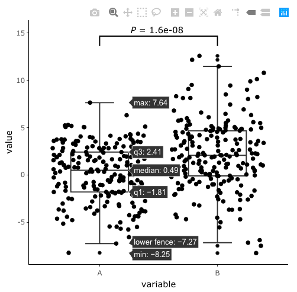
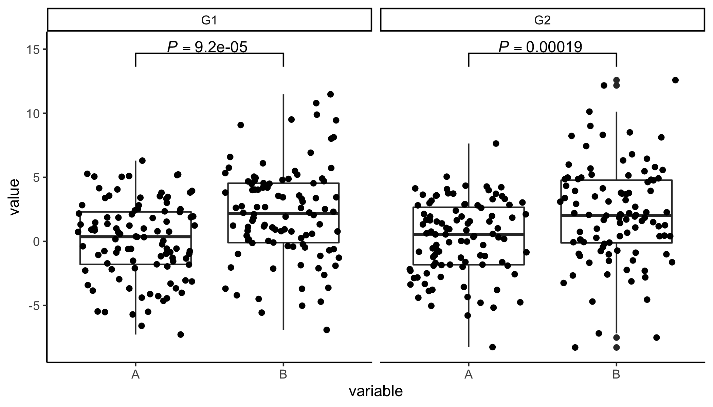
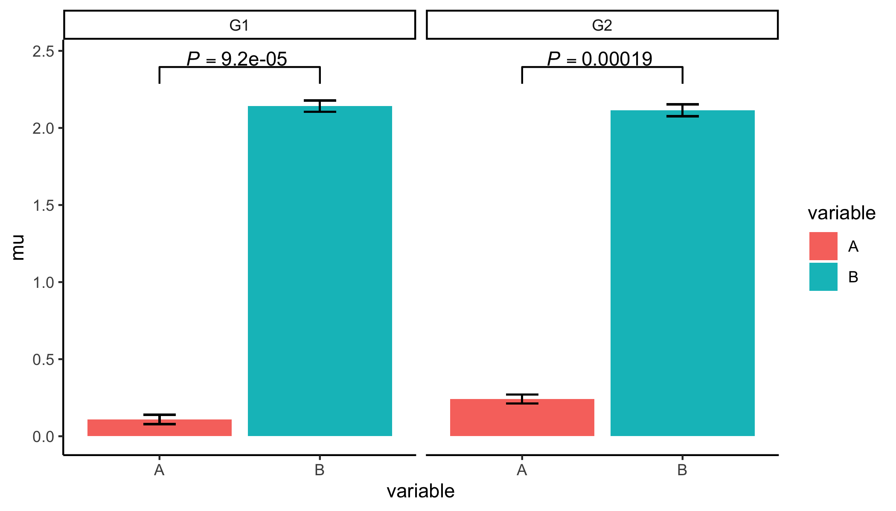
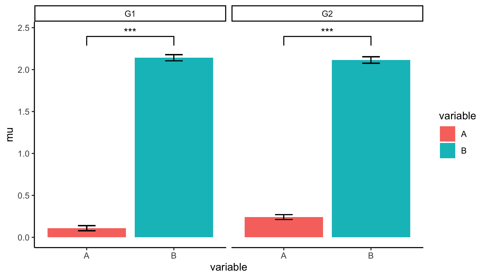
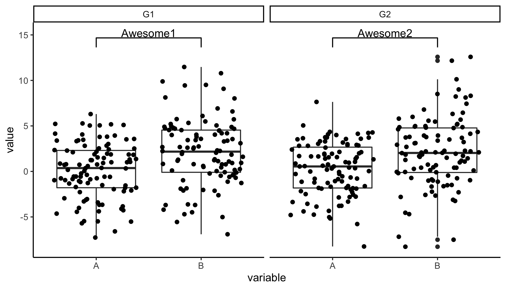

ggpval allows you to perform statistic tests and add the corresponding p-values to ggplots automatically. P-values can be presented numerically or as stars (e.g. *, **). Alternatively, one can also make any text annotation between groups.
Installation
# Install `ggpval` from CRAN:
install.packages("ggpval")
# You can install the lastest ggpval from github with:
# install.packages("devtools")
devtools::install_github("s6juncheng/ggpval")Example
Simulate data with groups.
library(ggpval)
library(data.table)
library(ggplot2)
A <- rnorm(200, 0, 3)
B <- rnorm(200, 2, 4)
G <- rep(c("G1", "G2"), each = 100)
dt <- data.table(A, B, G)
dt <- melt(dt, id.vars = "G")
theme_set(theme_classic())A trivial boxplot example
Give the group pairs you want to compare in pairs. By default we use wilcox.test, you can al well use t.test and others. The key word arguments for the test function, such as alternative = c("two.sided", "less", "greater"), paired= can be directly given. By default, we use the save default arguments as the test function.
plt <- ggplot(dt, aes(variable, value)) +
geom_boxplot() +
geom_jitter()
add_pval(plt, pairs = list(c(1, 2)), test='wilcox.test', alternative='two.sided')
Convert with plotly with ggplotly
To convert the plot with ggpval annotation to plotly, add plotly=TRUE:
plt <- ggplot(dt, aes(variable, value)) +
geom_boxplot() +
geom_jitter()
plt <- add_pval(plt, pairs = list(c(1, 2)), test = "t.test", plotly=TRUE)
plotly::ggplotly(plt) 
Boxplot with facets
plt <- ggplot(dt, aes(variable, value)) +
geom_boxplot() +
geom_jitter() +
facet_wrap(~G)
add_pval(plt, pairs = list(c(1, 2)))
Bar plot
ggpval tries to infer the column which contains the data to do statistical testing. In case this inference was wrong or not possible (for instance the raw data column was not mapped in ggplot object), you can specify the correct column name with response=.
dt[, mu := mean(value),
by = c("G", "variable")]
dt[, se := sd(value) / .N,
by = c("G", "variable")]
plt_bar <- ggplot(dt, aes(x=variable, y=mu, fill = variable)) +
geom_bar(stat = "identity", position = 'dodge') +
geom_errorbar(aes(ymin=mu-se, ymax=mu+se),
width = .2) +
facet_wrap(~G)
add_pval(plt_bar, pairs = list(c(1, 2)), response = 'value')
Additional arguments for statistical function can also be directly specified. Here we also the conventional “*” format for significance level.
add_pval(plt_bar, pairs = list(c(1, 2)),
test = 't.test',
alternative = "less",
response = 'value',
pval_star = T)
Annotate your plot with text

In case you to want give different annotations to each facets, provide your annotation as a list

Bugs and issues
Please report bugs and issues on github issue page: https://github.com/s6juncheng/ggpval/issues. Contributions are welcome.